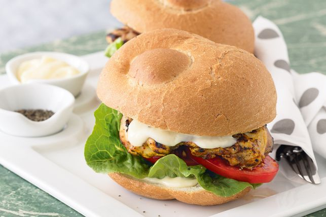

Fire up your grill to cook the tasty garlic, chilli and lemon marinated chicken for this burger.
Place the lemon juice, oil, chilli flakes and garlic in a medium glass or ceramic bowl.Season with salt.
Whisk to combine. Add the chicken and turn to coat. Cover with plastic wrap and place in the fridge for 10 minutes to marinate.
Combine the mayonnaise and extra garlic in a small bowl. Taste and season with pepper.
Preheat a barbecue grill or char grill on medium-high. Drain the chicken from the marinade. Cook on grill for 5 minutes each side or until chicken is just cooked through.
Place the bread roll base on a serving plate. Spread with half the mayonnaise mixture. Top with lettuce, tomato, chicken and the remaining mayonnaise mixture. Season with pepper. Top with remaining bread roll. Serve immediately